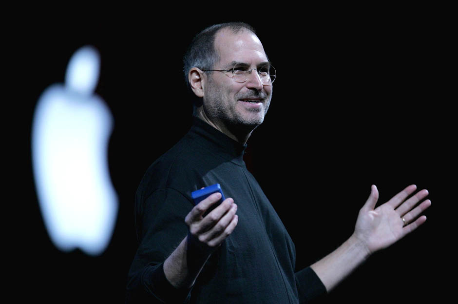
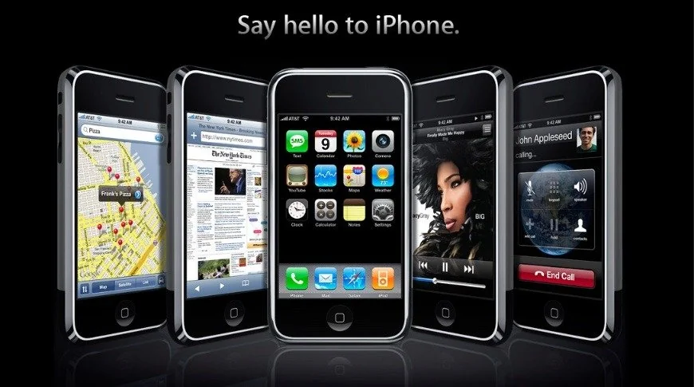
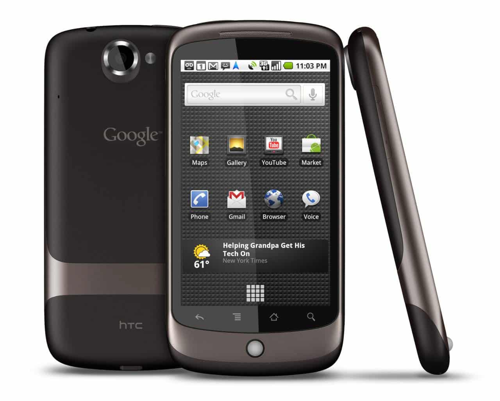
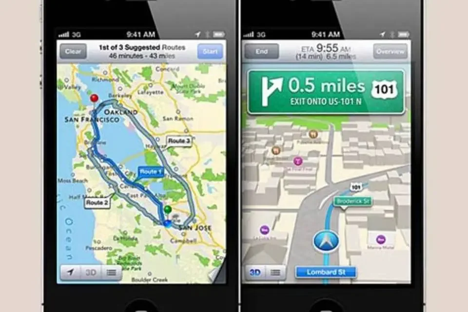

📋 Resumo
Assim como 1983 marcou a adoção do TCP/IP, 1989–1991 marcou a invenção da Web e 1993 trouxe o primeiro navegador popular, 2007 representa o momento em que a internet finalmente se libertou dos limites físicos do computador e passou a ser um companheiro constante da vida humana. A partir desse ponto, estar online deixou de ser uma atividade e passou a ser uma condição. Para historiadores da tecnologia, 2007 é o início da “era da mobilidade total”.
📚 Detalhes
Esse marco histórico gira, inevitavelmente, em torno de um único artefato: o iPhone, lançado pela Apple em 29 de junho de 2007. Embora outros celulares com acesso básico à internet já existissem há anos — como os aparelhos com WAP, BlackBerry e Palm Treo — nenhum deles oferecia a combinação de design, acessibilidade, interface intuitiva, tela multitouch e integração perfeita entre hardware, software e Web que o iPhone apresentou. O anúncio de Steve Jobs, feito em janeiro de 2007, é frequentemente descrito como um dos discursos mais emblemáticos do século XXI. Na apresentação, Jobs descreveu o iPhone como “um iPod widescreen com controles touch, um telefone revolucionário e um dispositivo de comunicação pela internet” — mas o impacto real foi muito maior do que isso.

O iPhone introduziu o conceito de computador de bolso capaz de acessar a Web real, e não versões reduzidas e simplificadas. Pela primeira vez, as páginas apareciam visualmente parecidas com as versões de desktop. A navegação por toque, com gestos intuitivos — pinça para dar zoom, arrastar para rolar, tocar para abrir — tornou a internet acessível a crianças, idosos e pessoas que nunca haviam usado computadores complexos. O mundo inteiro começou a redescobrir a Web em uma tela pequena, mas com possibilidades enormes.
Outro ponto transformador foi a decisão da Apple de integrar profundamente o navegador Safari ao iPhone. Antes do iPhone, navegar na internet pelo celular era tão difícil e lento que poucas pessoas o faziam. A partir de 2007, milhões de usuários começaram a acessar e pesquisar informações de qualquer lugar: no transporte, na rua, no trabalho, em cafés, em filas, em salas de aula. A internet deixava de ser um lugar ao qual você ia — ela começava a caminhar com você.

Mas o impacto de 2007 vai muito além da Apple. Na verdade, o iPhone desencadeou uma reação em cadeia na indústria inteira. Em apenas um ano, o Google anunciou o Android, que se tornaria o sistema operacional móvel mais popular do mundo. Os fabricantes começaram a abandonar teclados físicos e focar em telas sensíveis ao toque. A navegação móvel tornou-se prioridade, e as empresas passaram a redesenhar sites para que funcionassem em celulares, plantando as sementes do “design responsivo” que dominaria a década seguinte.

É importante lembrar que, em 2007, a App Store ainda não existia. Ela chegaria apenas em 2008, mas sua fundação filosófica — a ideia de que o smartphone deveria se tornar uma plataforma expandida por milhares de aplicativos produzidos por desenvolvedores independentes — estava sendo construída naquele momento. Mesmo antes dos apps, o iPhone já havia demonstrado que os celulares podiam ser mais do que ferramentas utilitárias: eram extensões da vida digital.
Outro impacto profundo de 2007 foi sobre a fotografia e a cultura visual. Câmeras embutidas em celulares já existiam, mas a combinação de câmera + internet móvel inaugurou um novo hábito: fotografar e postar instantaneamente. Esse hábito criaria, anos depois, o Instagram e toda a cultura da imagem em tempo real. O registro da vida cotidiana — até então limitado a máquinas fotográficas — começou a se tornar instantâneo e público.
O iPhone também mudou drasticamente a economia digital. Empresas começaram a perceber que precisavam criar versões mobile de seus serviços. Plataformas de redes sociais, como Facebook, recém-aberto ao público, e MySpace, em declínio, precisaram se adaptar. Serviços de vídeo, como YouTube, começaram a pensar em reprodução móvel. Serviços de e-mail, bancos, jornais e mapas se viram diante da necessidade de migrar para um ambiente móvel, criando as primeiras interfaces adaptadas para telas pequenas.
Culturalmente, 2007 representou o início de uma nova relação entre indivíduos e tecnologia: a relação de dependência, proximidade e intimidade. O celular deixou de ser apenas um telefone e passou a ser um assistente pessoal, uma agenda, um navegador, um player de música, uma câmera, um mensageiro, um repositório de fotos, um navegador social e, futuramente, um hub inteiro de aplicativos.
Psicólogos, sociólogos e antropólogos apontam esse período como o marco inicial da mudança comportamental que transformaria conversas, encontros, hábitos de lazer, consumo e até relações familiares. Outro fenômeno importante é que, com a mobilidade, a internet se tornou mais pessoal e individualizada. No computador, a internet era frequentemente compartilhada pela família. No celular, cada pessoa passou a ter seu próprio universo digital, seus próprios aplicativos, suas fotos, suas conversas privadas, seus perfis e seus hábitos de navegação. Isso abriu caminho para a personalização profunda da experiência digital, alimentada por algoritmos que aprenderiam com cada toque.
Além disso, 2007 é marcado pelo avanço das redes sem fio (Wi-Fi), pela expansão da banda larga móvel e pela primeira transição em direção ao 3G em vários países. Embora ainda limitada, a internet móvel ficou rápida o suficiente para permitir navegação, e-mails, mapas e vídeos curtos, criando a expectativa do que viria a seguir.
Outro ponto que costuma ser esquecido, mas é essencial: o lançamento do iPhone coincidiu com o início da era dos serviços baseados em localização. Pela primeira vez, telefones eram capazes de acessar mapas, identificar a posição do usuário e orientá-lo em tempo real. Em 2007, o Google Maps para celulares começou a ser amplamente utilizado nos EUA. A geolocalização abriria caminho para serviços que hoje são fundamentais — entregas, transporte por aplicativos, redes sociais baseadas em localização, recomendações gastronômicas e muito mais.

2007 também acelerou a transição para a cultura de notificações, uma característica que define a internet contemporânea. As pessoas começaram a receber alertas em tempo real sobre e-mails, mensagens, redes sociais e notícias. A noção de “tempo real” se tornou parte da vida cotidiana — algo que antes era restrito ao mundo corporativo, à televisão ao vivo ou a sistemas militares.
Em resumo, 2007 não foi apenas o lançamento de um aparelho: foi o surgimento de um ecossistema completo. Foi o começo da mobilidade digital, da personalização algorítmica, da internet sempre ativa, da fotografia instantânea, da geolocalização, dos aplicativos, da cultura de notificações e da vida online contínua.
É por isso que historiadores frequentemente dizem que, em 2007, “a internet deixou de ser uma ferramenta e passou a ser um ambiente permanente”. Depois de 2007, a tecnologia não apenas avançou — ela passou a acompanhar as pessoas em todos os momentos da vida. Tudo o que viria a seguir — apps, redes sociais móveis, streaming, mobilidade urbana, economia de plataformas, influencers, stories, TikTok, entregas, GPS, mensagens instantâneas, bancos digitais, saúde móvel — só se tornou possível porque, em 2007, a internet aprendeu a andar no bolso de cada indivíduo.
Lançamento do primeiro iPhone — apresentação de 2007 (Steve Jobs, Macworld 2007)
Video: https://www.youtube.com/watch?v=x7qPAY9JqE4
.
The iPhone Revolution (vídeo sobre a história do iPhone / impacto)
Video: https://www.youtube.com/watch?v=Xs5bpeIyNJg
.🔗 Fontes de Pesquisa